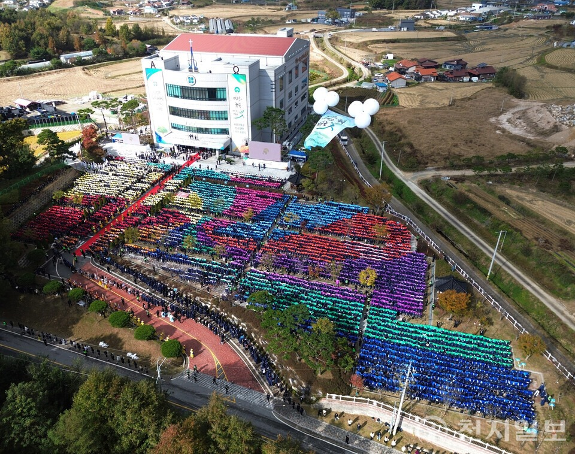
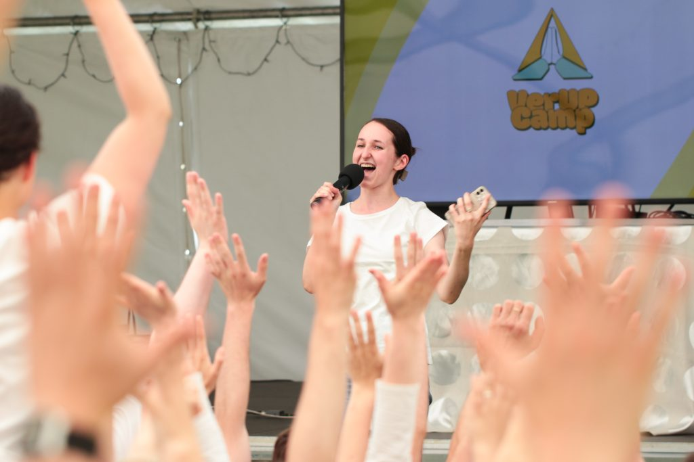

Tisková zpráva: K-Pop a náboženská svoboda
Za K-Popem se skrývají obavy o náboženskou svobodu v Jižní Koreji. Americký prezident Donald Trump označil situaci za „velmi špatnou“.
Číst článek »Shincheonji je církev, která věří v Ježíše a žije život víry podle jeho učení. V roce 2026 pokračujeme v šíření slova, které léčí národy a přináší naději světu.
„Potom jsem uviděl nové nebe a novou zemi, protože první nebe a první země pominuly.“
Zjevení 21 : 1
Za K-Popem se skrývají obavy o náboženskou svobodu v Jižní Koreji. Americký prezident Donald Trump označil situaci za „velmi špatnou“.
Číst článek »
Vláda v Jižní Koreji se výslovně zaměřila na konkrétní náboženskou skupinu a označila ji za „společenskou škodu“.
Zobrazit prohlášení »Dobrovolníci ze Shincheonji přinesli vánoční světlo do domovů seniorů v Praze. Akce potěšila desítky babiček a dědečků.
Celá zpráva »
Inspirativní příběhy lidí, kterým studium Bible a život v komunitě Shincheonji přinesly naději a smysl.
Zjistit více »
Tisíce studentů z celého světa, včetně České republiky, každoročně úspěšně zakončují studium v Misijním centru Sión.
Promoce 100 000 absolventů v Shincheonji se staly celosvětovou tradicí. Je to bezprecedentní fenomén, který ukazuje na neutuchající hlad po pravdě a hlubokém porozumění Bibli.
V roce 2024 odpromovalo rekordních 111 628 studentů za jediný rok, což potvrzuje výjimečnost našeho poznání.
Studenti si cení především jasného výkladu proroctví a jejich naplnění v dnešní době.
Celý název církve zní „Shincheonji, církev Ježíšova, svatyně stánku svědectví“. Jméno Shincheonji pochází z čínštiny a znamená Nové nebe nová země.
Shincheonji navěky zachovává novou smlouvu. Naším cílem je šířit lásku a světlo skrze porozumění Božímu slovu, které je v dnešním světě tolik potřebné.
V roce 2026 se zaměřujeme na budování pevných základů víry a podporu komunity skrze bezplatné vzdělávání.

Předseda Shincheonji
„Shincheonji se zavazuje stát se vtělesněním lásky, která přichází jako světlo, déšť a vzduch pro celý svět.“
Statistiky Misijního centra Sión za poslední roky.
Křesťanské misijní centrum Sión je biblický vzdělávací institut, který vyučuje o fyzickém naplnění knihy Zjevení. Kurz vede k plnému pochopení Bible.
Včetně tisíců pastorů z celého světa, kteří se k nám připojili pro hlubší studium Božího slova.
Připojte se k nám online nebo osobně.

Bible učí, že největším přikázáním je láska. Pořádáme pravidelné darování krve (LIFE ON) a pomáháme těm, kteří to nejvíce potřebují.
V roce 2026 pokračujeme v návštěvách domovů seniorů a kulturních akcích, které přinášejí radost a světlo do naší společnosti.
Máte dotazy k biblickému studiu nebo našim aktivitám v roce 2026? Neváhejte nás kontaktovat.
Email: czech@shincheonji.cz
Web: www.shincheonji.cz
„Poznejte tajemství Bible nevídaným způsobem.“

V listopadu 2025 uspořádala církev pátou celosvětovou promoci biblického studia. Promovali i náboženští lídři z různých zemí světa.
Číst více »Mezinárodní výměnný program přinesl modlitby a diskuse mezi hosty ze 60 zemí světa. Všichni hledali hluboké porozumění knize Zjevení.
Číst více »Shincheonji Tanzanie uspořádala historicky první biblickou zkoušku ze Zjevení za účasti 98 protestantských pastorů. Jedinečný krok v ekumenickém dialogu.
Číst více »
Od 13. do 15. června proběhl první mezinárodní VerUP kemp pro věřící z České republiky a dalších zemí střední a východní Evropy.
Číst více »Na dvou mezinárodních soutěžích v Jižní Koreji v červenci 2025 získali všichni členové Shincheonji taekwondo týmu medaile.
Číst více »Dobrovolníci ze Shincheonji přinesli vánoční radost do domovů seniorů v Praze. Koledy a společné chvíle potěšily desítky lidí v předvánoční době.
Číst více »